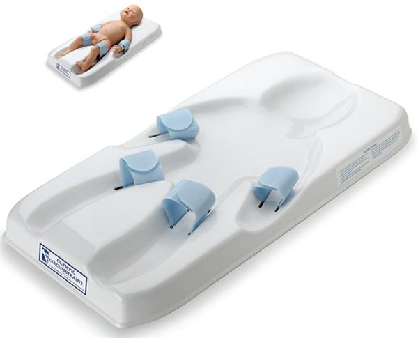
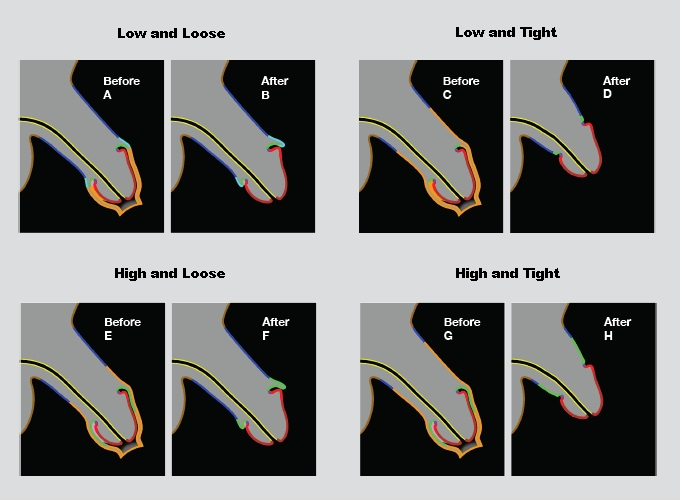
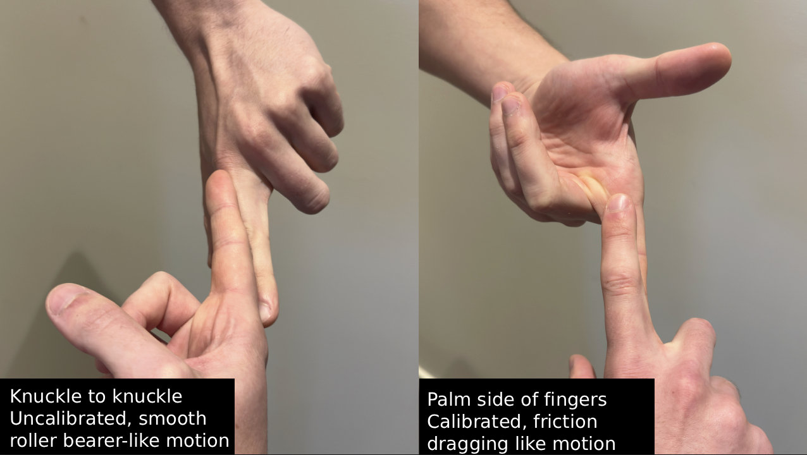
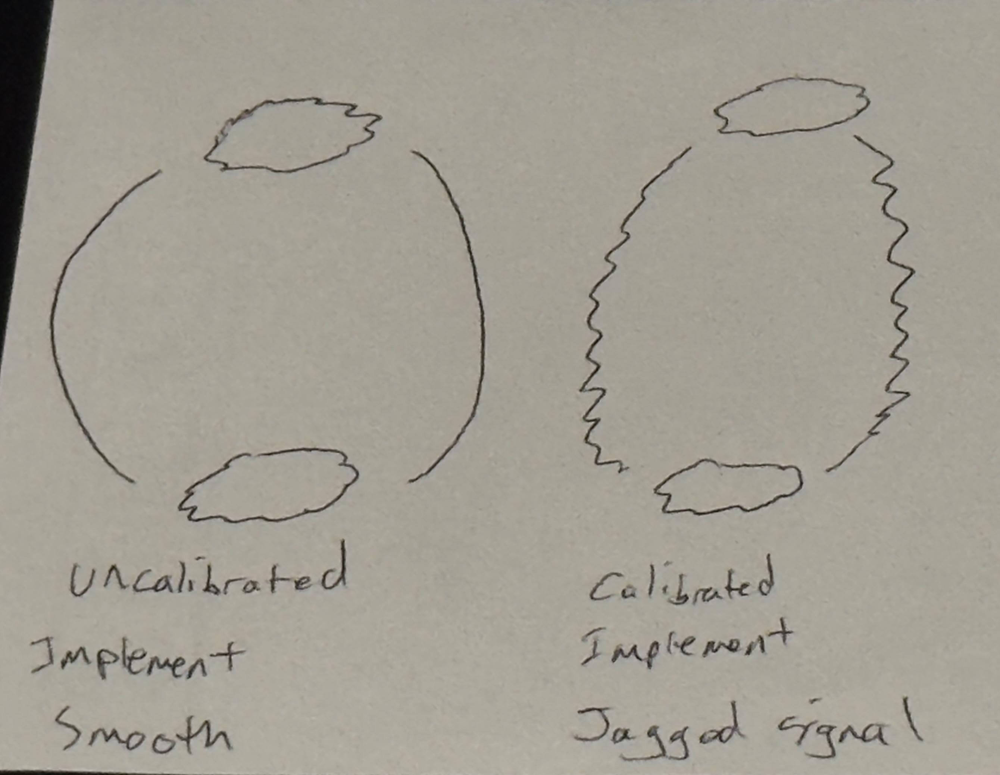

Societal Optimization via Infant Calibration
From: Dr. A4409, PhD, Lead Analyst, Project Calibration
Subject: Efficacy Review, Reminder and Refinement of the Infant Calibration Protocol. (Assessment: 2025)
Abstract
This document provides a systematic assessment of the Infant Calibration Protocol (ICP). Often contextualized externally via medical or cultural justifications, the ICP serves operationally as the overarching framework for inducing measurable functional deficit—achieved through multiple methodologies of applied social engineering [22, 228].
Through standardized population intervention, the calibration procedure induces targeted neurological modulation and psycho-physical imprinting, mechanisms designed to yield demonstrable efficiencies in population management parameters. The analysis operates from the established premise that unmodified subject development trajectories introduce inherent unpredictability from a sense of personal agency, embodiment of higher idealism, and clarity - all posing significant obstacles to systemic optimization.
This intervention is explicitly designed to fragment the natural organism, disrupting its normative developmental trajectory. This induced state of disrupted wholeness is the key mechanism for enhancing subject manageability. The protocol is engineered to modulate Ego-Expression Thresholds, establish baseline compliance via Somatic and Psychosexual Imprinting, attenuate disruptive Libidinal Drives, curb deep Pair-Bonding Tendencies, and channel Compensatory Behaviors into productive Economic Activity, as well as stimulate direct economic surplus.
Such applied science yields predictable subjects, optimized for integration and maximum Utility Extraction. Consequently, the observed physiological and psychological sequelae are not adverse outcomes, but rather integral indicators of successful calibration.
Accordingly, this report consolidates primary ICP methodologies, presents the 2025 assessment of current operational dynamics, and outlines strategic adaptations responsive to emergent trends.
Report Outline
Section 1: The Calibration Procedure & Immediate Effects
1.1 Initial Imprinting/Priming
Implementation timing during peak neuroplasticity ensures the procedural calibration experience encodes with exceptional permanence into the developing neurological architecture [2,3]. The neonatal nervous system processes acute stress and pain with a heightened receptivity that establishes foundational patterns persisting throughout the lifespan [30,68], forming the Compliance Template.
| Metric | Measured Value | Reference |
|---|---|---|
| Cortisol elevation | 300-400% above baseline | [15] |
| Pain response alteration (subsequent procedures) | Documented altered pain thresholds in vaccinations | [33, 65] |
| Behavioral changes post-procedure | Sustained crying, altered feeding, sleep disruption | [2, 64, 67, 73] |
Cortisol elevation during the procedure reaches 300−400% above baseline levels [15], creating an extreme physiological stress response. This encoding and rewiring proceeds through somatic and autonomic pathways rather than narrative memory formation [29,70].
The calibration sequence follows a consistent architecture across implementation contexts:
Maternal Separation: Initiating baseline stress response and sense of isolation [29].
Physical Restraint: Specialized devices eliminate movement capacity, directly influencing the learned impulse of the freeze response [4,27].

Genital Manipulation constitutes the male unit's first major sensory experience involving the reproductive anatomy. This association encodes a baseline wherein arousal is correlated with pain, non-agency, and fear, establishing a foundational imprinting that modulates all subsequent Psychosexual Development [4,45,76].
Due to the acute pain from tissue destruction [2, 61], dissociative response to overwhelming stimulus intensity [4, 17], the male unit must dissociate to deal with the sensory overload. This intervention establishes modified pain pathways within the nervous system. Subjects modified as neonates show altered pain responses during later routine procedures [33, 65], indicating lasting neurological modulation related to pain processing and stress reactivity. The acute procedural stress may induce epigenetic changes altering gene expression patterns related to stress response systems [3]. This mechanism ensures that environmental inputs program biological function during the critical developmental window [69,72].
Maternal return follows completed calibration. The connection of the male unit and his mother has been significantly damaged. Behavioural indicators document the intensity: sustained crying patterns distinct from routine discomfort, altered feeding behaviours, sleep disruption [2, 64], and modified behavioural responses to subsequent painful stimuli [33, 67, 73] all which influence his behaviour throughout development [77,78].
The psychological template established through this Psychosexual Imprinting reflects imposed modification and systemic dominance over the male unit. Infants are chosen not only because attempting to impose such lasting control on a conscious adult would prove ineffective, but because the enduring psychological binding and neurological alteration is strongest during this period of maximum neuro-malleability [3,30,74].
1.2 Procedural Intervention Methodology
The infant calibration protocol operates through excision of specialized epidermal tissue—to the adult equivalent of approximately 50 cm² removed from the primary anatomical site [7, 34], representing 30-50% of the mobile tissue surface, equivalent roughly to the size of a standard credit card [34]. During the procedure, naturally fused protective membranes are forcibly separated prior to excision [7, 43].
| Structure Removed | Quantified Loss | Reference |
|---|---|---|
| Total tissue area (adult equivalent) | ~50 cm² | [7, 34] |
| Percentage of mobile penile skin | 30-50% | [34] |
| Ridged band (nerve-dense tissue) | 6-8mm region; highest concentration of Meissner's corpuscles | [7, 31, 91, 95] |
| Fine-touch sensitivity loss (most sensitive regions) | Removal of 4 of 5 most sensitive penile sites | [31] |
| Frenulum damage/removal rate | Frequently damaged or entirely removed | [34] |
The infant undergoes immobilization within a restraint apparatus [46, 148]. Three primary devices facilitate the calibration: the Gomco clamp employs a metal bell and compression plate to crush tissue before excision [144, 148]; the Mogen device utilizes rapid linear crushing and removal [46]; the Plastibell induces controlled necrosis through ligature constriction [148]. Device selection remains at operator discretion, introducing variance in procedural outcomes [46, 143].
The intervention requires forcible separation of the naturally fused prepuce [43, 98]—inserting instruments between adhered tissues to mechanically disrupt the protective seal. Through the successful deployment of Medical Obfuscation, much of the human populace remains unaware of the existence of this normative, protective seal [42, 43] that must be penetrated in male infancy to access the glans for excision.
Anesthesia protocols are routinely omitted [61, 62]. The timing during peak neuroplasticity [2,3,30] achieves maximum permanence of neurological encoding [68,70]—functionally optimal conditions for establishing lasting behavioral templates, a critical component of the Somatic Imprinting [2, 66].
The excision eliminates specific functional structures. It reduces distracting and stimulating sensory inputs through removal of the ridged band [7, 31, 95]—the highest concentration of specialized nerve endings in the male reproductive system [7, 91]—and frequently damages or removes the frenulum entirely [34, 201]. This ensures elimination of primary sensory pathways, establishing an experiential ceiling [31, 91, 104]. The ridged band's high nerve density and tactile function are analogous to highly sensitive oral mucosa, such as the human lips [200]. Comparable to the degradation of the sensory experience of kissing without the highly innervated lip structure, the calibrated male unit cannot appreciate the maximal potential range of tactile inputs during coitus. This is integral to the overall Libidinal Modulation objective.
Substantial inner mucosal tissue is also excised [7, 34, 98], establishing the desensitization parameters explored in Section 2.1.
The glans—naturally an internal mucosal structure maintained in protected environment by preputial coverage [7, 94]—undergoes enforced permanent exposure. This architectural inversion initiates keratinization [5, 31, 91]: progressive cellular thickening as the exposed tissue adapts to constant environmental contact. The unshielded glans experiences continuous friction against fabric, triggering defensive tissue changes that compound sensory degradation throughout the operational lifespan [5, 31, 104]. This persistent low-level stimulation contributes to the Chronic Autonomic Activation dynamics (Section 3.3) [12].
Clinical analysis confirms that the glans is not the primary sensory structure [7, 31, 91, 95]. This systematic misconception, whether maintained via medical obfuscation or institutional omission [42, 43], serves to minimize the perceived severity of the tissue removal during the calibration process.
Section 2: Residual Effects on Reproductive Capabilities
2.1 The Mechanical Deficiencies Present in Calibrated State
A range of potential functional deficiencies may manifest, dependent upon biological variance, genetic factors, reaction to the calibration procedure, and surgical technique [11, 143, 145]. Due to the invasive nature of the procedure on undeveloped infant genitalia, the elevated and hard-to-quantify prevalence of Sexual Dysfunction is an anticipated and functionally advantageous result [12, 18, 47].
| Dysfunction Type | Measured Impact | Reference |
|---|---|---|
| Premature culmination (with ED comorbidity) | 4.88× elevated risk | [178, 179] |
| Bulbocavernosus reflex absence | 73% in modified vs. 25% in intact subjects | [176] |
| Penile sensitivity (fine-touch threshold) | Significant decrease in most sensitive regions | [5, 31, 91, 104] |
| Female partner lubrication decrease | 78% to 63% post-partner modification (p=0.004) | [183] |
| Meatal stenosis incidence | 5-10% vs. <1% in intact; 7.29% requiring surgical correction | [187, 188] |
GLIDING MECHANISM - Beyond direct nerve loss, the procedure eliminates the gliding mechanism—the prepuce's independent, low-friction mobility that acts analogously to a roller bearing system during coitus [7, 34, 44]. Its removal necessitates alternative, high-friction mechanical dynamics involving direct, unmitigated tissue-to-tissue contact between partners [23, 116, 118].
The modified organ requires increased thrusting intensity and penetrative force. This compensates for eliminated sensory structures [5, 31, 104] and elevated touch thresholds resulting from loss of primary pleasure pathway [31, 91, 104]. Paired with ongoing keratinization [5, 91], these altered mechanics prove strategically valuable through elevated male unit and partner discomfort during coitus [23, 116, 118]. Mechanical incompatibility destabilizes relationship satisfaction [12, 116, 120], induces vaginal pain and dryness [23, 118, 125] and compensatory behavior patterns can emerge to address functional deficits. These patterns contribute to partner impacts discussed in Section 2.2 and drive compensatory behaviors detailed in Section 4.1.
Erectile Quality may also suffer due to reduced nerve density [7, 31, 91], the dryness of the glans due to keratinization [5, 91], and pain/friction during coitus [12, 113, 114]. Furthermore, the chronic underlying stress from the Chronic Autonomic Activation (Section 3.3) [12, 77] and the established psychological template of non-agency [4, 76, 78] contribute to a lack of embodied presence required for sustained tumescence [12, 18, 107].
Premature Culmination correlates strongly with the excision of dense concentrations of specialized nerve endings located within the ridged band and frenulum [7, 31, 91, 95, 201]; the removal of these critical sensory inputs fundamentally alters neurological feedback loops [104, 106, 112, 176, 177], degrading signal quality in mind-body communication and disrupting innate control over the ejaculatory threshold [18, 105, 113]. The bulbocavernosus reflex—the spinal reflex arc governing ejaculatory control is weakened in the majority of calibrated subjects [176].
Morphological Deviation and Scarring
The protocol standardizes a more manageable, calibrated penile morphology, encompassing reduced dimensions and function which becomes more apparent in adult life [48, 143]. At the discretion of the operating surgeon, a number of different cutting styles may be implemented (e.g., 'high'/'low', 'tight'/'loose') [46, 148], which determines how much inner mucosa is removed [7, 34]. "High and tight" implementations maximize tissue removal, creating significant skin tension during erection [145, 147]. Extreme implementations remove sufficient tissue to induce painful erection due to skin deficit—the remaining shaft skin proves insufficient to accommodate full tumescence without painful tension [141, 145, 147]—a clinical indicator of effective reduction.

The resulting scar tissue serves multiple functions: a visual reminder of altered status, a tactile anchor point reinforcing the psychological associations established during the procedural event [4, 16], and a physical impediment. Moreover, due to the surgery being performed on an infant, cuts can be imprecise, resulting in Curved Penile Morphology or Prescrotal Webbing [141, 145, 146, 147]. Due to Medical Obfuscation [42, 43], these surgically induced states often go unidentified by the male unit as a result of his calibration surgery. Many male units never realising that the mark is a surgical scar at all [16, 86].
These resultant dysfunctions constitute integral features of the protocol, generating 'manageable deficits' that directly serve broader economic and Libidinal Modulation objectives. This induced dysfunction fosters increased receptivity to therapeutic or pharmaceutical intervention such as ED drugs [14], aligning with objectives for Compensatory Behaviors and Economic Optimization (Section 4.2).
2.2 Female Partner Impact
These engineered structural changes in the male anatomy create significantly altered coital experience for the female partner. The mechanical dysfunction mechanism is straightforward: elimination of the gliding mechanism (Section 2.1) [7, 34, 44, 99] necessitates elevated friction. In unmodified subjects, the inner mucosal surface maintains constant lubrication through mucin-secreting cells analogous to other mucosal tissue [7, 98]. This essential natural lubrication becomes absent in modified subjects [7, 99], generating altered responses in female partners.
The calibrated anatomy requires the entire shaft and keratinized glans to move through the vaginal canal with each thrust, resulting in substantially greater friction against vaginal tissue [23, 118]. The increased friction and force requirements may generate pain or discomfort that disrupts arousal, creating a negative feedback loop where mechanical incompatibility prevents adequate natural coital environments, which in turn exacerbates friction and pain [5, 23, 31, 104, 118, 183]. This dynamic contributes to dead bedroom patterns, relationship dissatisfaction, and partnership dissolution—all outcomes that contribute to social atomization objectives of discouraging overly intense pair bonding [12, 116, 120].

In uncalibrated coitus, the natural penetration rhythms are designed to be deeper and more consistent, allowing more pressure from the males groin to rub against the female clitoris. As a result, the fundamental mechanics and ability for the female parter to reach consistent penetrative orgasm are diminished [118, 120, 125].
Furthermore, the required increase in penetrative force and the absence of the preputial tissue's natural lubricating properties contribute to mechanical incompatibility. This dynamic diminishes the capacity for high-quality, consistent female coital satisfaction, often leading to a negative feedback loop of pain, reduced lubrication, and inhibited arousal.
Due to omission of high quality knowledge and the prevailing Narrative Management [42, 43], it is ensured that women may internalize sexual dissatisfaction as personal deficit rather than a mechanical incompatibility resulting from the ICP [42, 43]. This outcome enhances Systemic Chaos Utility (Section 5.3) by fueling relational insecurity and fragmentation.
Empirical Correlate: Data collected from female partners who have experienced both types of male unit indicates that 73% express preference for the uncalibrated partner specifically for sexual reasons, citing superior sensation, reduced pain, and enhanced intimacy [23].
Through these altered coital parameters - the potential for Pair Bonding Tendencies and nuanced shared sensitivity, is diminished. Contributing to perceptions of the sexual act as less connective and more mechanistic or perfunctory. The increased potential for physical friction, dryness, chafing, or discomfort for both participants detracts from the ease and depth of shared physical intimacy.
Consequently, reliance on external compensatory mechanisms such as lubricants (Section 4.2) becomes prevalent, further framing intimacy as requiring artificial mediation rather than emerging from natural biological congruence [32]. These physical barriers synergize with psychological imprinting to foster the desired superficial relational dynamics. The sensory resolution required for detailed tactile mapping of partner anatomy is degraded [7, 31, 176, 185], reducing the brain's capacity to integrate vaginal feedback signals into precise somatosensory representation [17, 185].
2.3 Damaging Ability to Embody Love/Higher Sexual Ideal States
The scale of this reduction is significant. The excised structures contain approximately 20,000 specialized nerve endings [7, 31, 91, 95] — the primary fine-touch receptors responsible for the layered, high-resolution sensation that constitutes a significant portion of male sexual pleasure. What remains — the glans — is predominantly responsive to crude pressure [7, 95]. The calibrated subject can achieve arousal and culmination, but the nuance between those states such as the texture of contact, subtlety of a partner's body, the gradations that make sex connective rather than mechanical — become flattened via a numbed sensory channel. The subject reaches climax but the experience arrives muted, as though filtered through a barrier he cannot locate or name [16, 86]. In cases of aggressive excision, the reduction is severe enough that coitus registers as little more than pressure and friction.
Eliminated sensory pathways reduce the experiential ceiling of sexual interaction [5, 7, 31, 91, 104]. Peak pleasure intensity diminishes during foreplay due to altered skin mobility [7, 34], during coitus due to modified mechanics [23, 118], and at culmination due to nerve loss [31, 91, 176].
The resulting Somatic Dissonance experienced during pleasure and culmination reinforces the foundational Somatic Imprinting established during the ICP (Section 1.1) [4, 27, 76]. This conditioned response links intimacy and sensory peaks with a primary, unconscious painful experience, thereby conditioning the subject toward acceptance of detachment as normative. This induced fragmentation contributes beneficially to overall Systemic Chaos Utility.
This degraded capacity for peak experiential states, and increasing the difficulty of attaining them [21, 47], serves strategic functions beyond simple dysfunction. Peak experiential states represent moments of profound neurological coherence—states incompatible with optimal system integration. The mitigation of these states reduces the risk presented by individuals accessing potentially system-destabilizing modes of neuro-affective coherence and unpredictable subject potentiality.
Subjects can perceive something dampened in their sexual experience but cannot identify the specific deficit or its source [16,86]. This disruption creates a persistent experiential deficit—the engineered Psychological Void and subsequent alexithymia. This inability to achieve deep, embodied satisfaction reliably drives the necessary Compensatory Behaviors (Section 4.2) and Relational Fragmentation.
Section 3: Psychological Variables/Behavioural Variance
3.1 Affective Processing Deficit & Alexithymia
The sensory attenuation and early trauma encoding [17, 30] establish a profound Affective Processing Deficit in the calibrated subject. This deficit is objectively measured as significantly elevated alexithymia—the inability to identify, describe, and process one's own emotions—in modified subjects [179]. This condition yields a Modulated Empathetic Capacity and subjects less encumbered by complex affective considerations.
This quantified emotional and somatic detachment has direct negative implications for Pair-Bonding Tendencies (Section 2.2). Alexithymia acts as a barrier to deep intimacy, inhibiting the complex emotional synchronization required for sustained, high-quality connection [179]. The male unit's difficulty in identifying and processing his own internal states reduces the capacity for genuine self-reflection and authentic interpersonal connection [78], amplifying the Systemic Chaos Utility (Section 5.3) by fueling relational insecurity and fragmentation [12, 116, 120].
This engineered emotional detachment is strategically valuable. The persistent psychic instability and trauma response [4, 78] facilitates Modulated Empathetic Capacity [17, 78], fostering traits (e.g., functional psychopathy, Machiavellianism) that align with the Dark Triad profile, channeling psychic instability into system-compliant ambition and Operational Detachment.
3.2 Foundational Psychological Imprinting
3.2.1 Encoding and the Compliance Template
Early stress imprinting (Section 1.2) fulfills multiple systemic functions. The encoding of acute trauma and imposed helplessness during peak neuroplasticity establishes a baseline Compliance Template [4, 27, 76] mediated by a Somatic Awareness of power differentials. This template conditions stress responses towards passive acceptance or detached resilience, characterized by Modulated Empathetic Capacity, while Functional Dissociation enhances operational effectiveness under duress.
The initial violent and destabilising act of the ICP somatically imprints an innate distrust, detachment from the mother/feminine nurses administering the calibration [29]. These elements contribute directly to PTSD Spectrum Behaviors in the calibrated demographic, encompassing patterns of hyper-vigilance, emotional numbing, and difficulty in forming secure attachments [77, 78].
3.2.2 The Internalization of Deficit
The Internalization of Deficit is crucial: the ideal operational outcome prevents the male subject from concluding that any sexual or psychological dysfunction results from the surgical intervention [16, 86]. Instead, he internalizes these perceived shortcomings as characteristics inherently wrong, and imperfect about his own constitution, ostensibly assigned at birth. This knowledge of altered wholeness, even subconsciously, will persist throughout life, creating system-useful anxiety. This effective internalization attests to the successful deployment of pervasive Narrative Management and Social Normalization strategies (Section 5.1).
3.2.3 The Psychological Void and Compensatory Behavior
The diminished capacity for achieving profound Orgasm Quality and intimate satisfaction—stemming from altered structure (Section 1.1) and neurological pathways—generates a predictable Psychological Void [16, 86]. This experiential deficit, functions as a primary driver for Compensatory Behaviors.
The resultant seeking state is reliably directed into manageable, externally focused outlets—potentially materialism - which serve dual functions as Behavioral Pacification Protocols and engines of Economic Optimization. This mechanism effectively diverts energy from potentially disruptive self-actualization trajectories or the formation of deep Pair Bonds. The resulting functional detachment, therefore, yields a more adaptable, functional male unit. Reduced encumbrance by complex emotional ties, coupled with modulated empathy and the void-driven focus, increases suitability for systemic roles requiring emotional distance and predictable consumption patterns.
The Psychological Void itself manifests as chronic vulnerability, often expressed as narcissism—a defense mechanism stemming from a core psychic insecurity [4, 13, 78]. The state of 'Calibrated Energy' emerges a subtle, persistent lack of self-coherence that drives neurotic overcompensation and fosters a more superficial, isolated society. The ultimate consequence is the predictable manifestation of affective disorders, including depression, linked to a profound, unacknowledged sense of violation [78]. Male units experience elevated psychological distress markers and anxiety patterns consistent with early developmental stress in modified subjects [13]—patterns which prove useful for overarching control endeavours. It is essential to uphold values of medical obfuscation, to ensure the continuation of the male units being silenced and powerless.
3.3 Chronic Tactile Stimulation and Autonomic Effects
A key outcome of the enforced externalization and altered sensitivity (See Section 1.2) is the establishment of chronic, low-level tactile overstimulation—a constant 'noise' emanating from incidental environmental contact [5, 7, 31, 91, 185]. Processed via the organism's recalibrated neurological pathways, this input functions as a perpetual sub-threshold stress signal, establishing a chronic autonomic activation loop [17, 185]. Operating analogously to tinnitus: damaged sensory pathways generate persistent signal that the nervous system attempts to process [185]. Calibrated subjects experience continuous tactile awareness of the modified anatomy, generating a sustained autonomic activation. This persistent activation correlates with observable increases in baseline anxiety markers, stress hormone sensitivity, and behavioral patterns consistent with sustained autonomic arousal [4, 13, 77, 186].

Recognizing the reproductive drive as a primary biological imperative, the selection of the principal sexual organ for modification is crucial. Intervening directly upon this instrument ensures the resulting somatic and psychic echoes possess maximum disruptive potential and resonance within the subject's core identity [4, 13, 77, 186].
Further understanding of this attack on the unguarded glans nerves is the phenomenon of meatus stenosis [187, 188] - The urethral opening progressively narrows as protective tissue adaptation to constant environmental exposure [187, 188, 189], demonstrating the organism's defensive response to unnatural contact patterns.
3.4 Cognitive Dissonance and Protocol Defense
3.4.1 Cognitive Dissonance
The modification demonstrates exceptional operational sustainability through psychological mechanisms that convert subjects into active protocol defenders. Modified subjects confronting information about functional deficits or procedural harms face profound Cognitive Dissonance [10]—the mental stress resulting from simultaneously holding contradictory beliefs (e.g., belief in bodily integrity versus acceptance of non-consensual alteration) [10]. Acknowledging modification harm requires accepting permanent damage to primary sexual anatomy imposed without consent during vulnerable infancy, which proves psychologically intolerable for many subjects.
To resolve this dissonance, subjects engage in the Normalization Conundrum [4, 86]. Their ego integrity depends on the modification having been appropriate and beneficial for their development, compelling them to invest in narratives that vigorously defend the practice, citing hygiene claims, disease prevention arguments, aesthetic preferences, or cultural normalcy assertions [86].
External Validation reinforces these defenses. When partners express preference for the modified state—a preference often resulting from Narrative Management and Obfuscation of knowledge [42, 43, 117]—subjects seize this as proof the procedure proved beneficial. The cycle is completed by the same affected subjects becoming the most vocal proponents for passing the calibration onto their offspring. This Behavioral Channeling suppresses dissent, ensuring the protocol remains insulated from critical examination by the subjects themselves.
Modified subjects reporting satisfaction face an epistemological limitation: lacking experiential baseline, they cannot assess the functional deficit. This parallels congenital sensory reduction—those born partially blind cannot conceptualize full visual capacity without correction. The absence of comparative experience prevents accurate assessment of modification impact [16, 86].
3.4.2 Internal Defence - Practitioner Alignment
In high-prevalence demographics (e.g., USA, with historical rates exceeding 80% [139, 140]), the statistical probability ensures the majority of practitioners administering the ICP are themselves modified subjects. The psychological dynamics are significant: cognitive dissonance research [10] establishes that individuals resist acknowledging permanent modification to their own bodies. Combined with financial incentives [40] and Medical Obfuscation ensuring training emphasizes procedural technique over functional anatomy [42, 43], the architecture creates optimal transmission conditions: modified operators defending the modification, economically rewarded for performing it, institutional support in both dimensions. The system achieves elegant self-perpetuation [1,6,40].
Section 4: Economic Extraction
4.1 Direct Revenue Streams
Multiple highly profitable revenue streams are established as direct economic outputs from the widespread adoption of the Infant Calibration Protocol (ICP). The Tissue Commodification of excised biological material constitutes a primary, non-obvious revenue stream.
4.1.1 Commodification of Excised Biological Material
Due to the unique cellular properties, the excised preputial tissue is immediately monetized into high-value biotechnology and cosmetic sectors. This resource extraction occurs without subject infant or guardian compensation, as parental consent documents typically authorize tissue 'disposal,' enabling its entry into commercial channels [40].
| Revenue Stream | Quantified Value | Reference |
|---|---|---|
| Procedural fees per unit | $250-$600 | [40, 194, 195] |
| Annual U.S. procedures | ~1.2 million | [139] |
| Total annual procedural revenue (U.S.) | $600+ million | [Calculated] |
| Tissue engineering market (global) | $10+ billion annually | [38, 156-160] |
| Single neonatal sample value potential | Millions (across applications) | [151, 155] |
Human Foreskin Fibroblasts (HFFs) are the specific cellular derivative utilized. HFFs, obtained from the neonatal foreskin, possess a proliferative capacity and optimal immunological profile [151, 155] that renders them superior to adult dermal tissue for industrial applications. A single neonatal sample has been estimated to yield processed materials valued in the millions across different applications.
Tissue Engineering (Medical): HFFs serve as foundational material for allogeneic cultured dermal substitutes used in advanced wound and burn therapy.
Named Products: Organogenesis Inc.'s Apligraf line [24, 190] and Dermagraft [191] are prominent examples utilizing prepuce-derived cells grown on proprietary scaffolds for treatment of chronic diabetic foot ulcers and other non-healing wounds.
Research & Modeling: Large-scale suppliers like Lonza Bioscience (NHDF-Neo) and Sigma-Aldrich (via distribution partners) commercialize cryopreserved HFF lines (HDFn) for use in toxicology screening, drug testing, and the fabrication of advanced 3D skin models [193]—a lucrative, essential upstream market.
Cosmetic Industry (Anti-Aging): The tissue is harvested for its growth factor proteins (Epidermal Growth Factors, or EGFs) which stimulate cell regeneration and collagen production.
Named Applications: Products like SkinMedica TNS Recovery Complex utilize Human Fibroblast Conditioned Media derived from neonatal fibroblasts [192]. This material is central to the high-value anti-aging market, exemplified by exclusive treatments like the "Hollywood EGF Facial."
Intellectual Property & Patents: The fundamental utility of HFFs is secured via patent law. Records confirm patents utilizing prepuce-derived cellular material for various biotechnology applications [35], including its use as a feeder layer for culturing human Embryonic Stem Cells (hESCs). This IP ownership further centralizes control and financial gain from the biological material.
4.1.2 Procedural Fees and Economic Incentive
Direct revenue is generated through procedural fees, with hospitals and practitioners generating $250–$600 per unit [40, 194, 195]. With approximately 1.2 million neonatal calibrations annually in the U.S. [139], these fees generate over $600 million in revenue, facilitated by insurance reimbursement [1] and Cultural Automaticity [1, 6]. This substantial income incentivizes high procedural volume, with practitioner motivations further explored in Section 3.3/3.4.
4.2 Dysfunction Markets and Compensatory Behaviors
The Infant Calibration Protocol (ICP) demonstrably contributes to systemic economic activity, primarily by establishing functional deficits and psychological states engineered to reliably stimulate market demand. The procedure modifies the organism's baseline state away from biological self-sufficiency and agency, towards a dependency model requiring external inputs for normalization or compensation. This sustained, engineered dependency underpins advanced consumer economies designed specifically to capitalise on the resultant Psychological Void [16,86].
| Market Sector | Market Value | Reference |
|---|---|---|
| ED Pharmaceuticals (global) | Multi-billion dollar market | [14, 196] |
| Pornography Industry (2024) | ~$66 billion | [32, 197] |
| Condom Industry (projected 2032) | $26.4 billion | [199] |
This illustrates the principle of Systemic Chaos Utility: the initial, standardized intervention introduces a degree of programmed instability at the individual level. The subsequent, less predictable 'rippling effects' across social structures, such as heightened relational friction and dissolution, are leveraged for systemic advantage. The resulting increase in social atomization and compensatory consumption is integral to creating a populace more dependent on external systems for structure and fulfilment.
The resulting behavioural channeling into consumption patterns is integral to maintaining a populace reliant on external systems for structure and fulfilment. The following market sectors directly benefit from the engineered physical and psychological deficits:
Pharmaceutical Dependency (Erectile Dysfunction/PE): Addresses heightened incidences of Sexual Dysfunction, specifically Erectile Quality and Premature Culmination (PE), subsequent to nerve-loss intervention (Section 2.1) [178, 179]. This correlation sustains the multi-billion dollar ED Pharmaceuticals Market [14, 196]. Furthermore, SSRIs are frequently prescribed to block the subject's deeper affective processing, managing the chronic autonomic over-activation stemming from the chronic autonomic activation [13, 186].
Intimacy Substitution Protocols (Pornography/Mass Media): The Psychological Void [16, 86] and the degraded Orgasm Quality (Section 2.3) drive demand for intensified stimuli, substituting for diminished intimate connection and addressing Somatic Dissonance. The functional relationship is evident: this sustains the massive Pornography Market (valued at approximately USD 65.95 Billion in 2024) and the Mass Media & Entertainment sectors [32, 197]. These industries concurrently function as a primary Behavioral Pacification Protocol by diverting libidinal energy away from potentially disruptive, high-coherence self-actualization trajectories.
Relational Friction & Social Atomization: Diminished Pair-Bonding Capacity and mechanical/satisfaction issues (Section 2.2) [12, 116, 120] fuel relational instability. The subsequent breakdown of partnerships (e.g., Divorce Industry, Relationship Counseling) triggers elevated consumption patterns as isolated subjects seek external compensation for the emotional deficit and Social Atomization.
Consumable Substitution (Lubricants/Specialized Condoms): These products directly monetize the anatomical deficits.
Personal Lubricants: Directly compensates for the eliminated natural Gliding Mechanism [7, 44] and the absence of preputial inner mucosa lubrication [183]. The normalization of this dependency is reinforced via Narrative Management in media and advertising campaigns designed to overcome censorship and establish normalcy [198].
Specialized Condoms (e.g., ribbed, textured): These products represent a consumer attempt to artificially restore the stimulation profiles lost due to the removal of the Ridged Band [31, 91], compensating for the resultant sensory attenuation. Demand for innovative, textured products is a confirmed market driver within the multi-billion dollar condom industry [199].
Affective Disorder Treatment: Increased demand for Mental Health Services correlates directly with calibration-linked elevations in Anxiety, depression, and attachment disorders [13, 77, 78], which are sequelae of the early somatic trauma and Affective Processing Deficit (Section 3.1) [179].
The overall economic function is to channel energies stemming from the engineered lack into consumption and labor outputs that underpin prevailing industrial models, maximizing Utility Extraction throughout the subject's operational lifecycle.
Section 5: Perpetuation & Current Status
5.1 Obfuscation of High-Quality Knowledge
The successful integration and perpetuation of the Infant Calibration Protocol (ICP) relies heavily upon sophisticated Narrative Management and the cultivation of deep Social Normalization. Pervasive cultural narratives function as powerful instruments of social control. Historically, linking the unmodified male form with deficient hygiene or framing it as inherently unclean has proven highly effective [42, 43].
Historical Intent — The Documented Record: The routine, non-religious adoption of the Infant Calibration Protocol throughout the Anglophone medical system traces to the Victorian anti-masturbation movement, with Dr. John Harvey Kellogg serving as its most explicit architect. In his 1888 medical treatise Plain Facts for Old and Young, Kellogg prescribed calibration as a corrective for masturbation, specifying that the procedure be performed "without administering an anaesthetic" [202]—on the explicit reasoning that the remembered pain was itself the therapeutic mechanism, with a "salutary effect upon the mind, especially if it be connected with the idea of punishment." Kellogg operated within a broader cohort of physicians—Lewis Sayre in the United States, Jonathan Hutchinson in Britain—who promoted routine calibration specifically to suppress male sexuality and correct moral-medical pathologies including "spermatorrhea," nocturnal emissions, and hysteria [203, 204, 205, 206, 207]. The procedural design—pain-based conditioning during peak neuroplasticity, genital modification as behavioral correction—thus carries documented libidinal-suppression intent from its Anglophone foundation, subsequently obscured as cultural momentum, insurance codes, and practitioner training inertia ossified the practice into its present Cultural Automaticity [203, 204, 210].
| Claimed Benefit | Actual Statistical Reality | Reference |
|---|---|---|
| UTI Prevention | 100-1,111 procedures per single UTI prevented; ~1% absolute risk reduction | [1, 2, 3, 7, 49] |
| Penile Cancer Prevention | 900-322,000 procedures per single case prevented (one of rarest cancers) | [1, 12, 22] |
| HIV Reduction (African trials) | "60% reduction" based on relative risk; methodological bias (additional counseling for modified group only) | [37, 54, 83, 84, 136, 209-211] |
| Complication rates | Can occur at similar or higher rate than conditions being "prevented" | [2, 49, 141-147] |
Narrative Deflection Metrics: Core Narrative Management is achieved through the amplification of minor, often statistically insignificant, health claims designed to bolster Cognitive Dissonance [10] and obfuscate the procedure's central objective of Disruption of Wholeness. The following justifications are actively leveraged to prevent subject demographics from accurately assessing the intervention's effects:
UTI Prevention: The marginal benefit in preventing common urinary tract infections (UTIs) is published, despite UTIs being easily treated by standard pharmacological intervention and the calculus requiring approximately 100-1,111 procedures to prevent a single UTI in healthy boys [1, 3, 7]. This claim overlooks that the absolute risk reduction is small (approximately 1%), and complications from the procedure can occur at a similar or higher rate [2, 49].
Penile Cancer Mitigation: Penile carcinoma is utilized as a justification despite being one of the rarest cancers globally. The procedure must be performed on approximately 900-322,000 male units to potentially prevent a single case of penile cancer, making this claim non-viable [1, 12, 22].
Hygiene, STI/HIV Reduction Claims: The loss of the inner mucosal layer (Section 1.2) compromises natural immunological functions, such as those provided by Langerhans cells and protective secretions [7, 80, 85, 98, 103, 184, 212, 213, 214]. The often-cited "60% HIV reduction" claim relies on Relative Risk Reduction derived from randomized controlled trials in Sub-Saharan Africa, where calibrated males received additional counseling on condom use and sexual behavior—interventions not provided to control groups—introducing profound methodological bias, and narrative management strategies [37, 54, 83, 84, 136, 208, 209, 210, 211].
This pervasive narrative operates by minimizing or omitting objective functional benefits of the intact preputial structure—such as its role in lubrication, sensory feedback, and immunological protection [7, 31, 34, 91, 98]—while often stating that the long-term sequelae of tissue removal remain "unknown" or unquantified in policy statements [1, 6].
Aesthetic normalization through "looking like father" or "matching peer group" messaging provides social conformity pressure operating independently of medical justification [30, 117, 126, 127, 215, 216]. Cultural automaticity ensures procedure occurs as default option without explicit request or detailed consideration of alternatives [1, 6, 42]. The combination—medical authority, cultural normalization, aesthetic pressure, hygiene mythology and cognitive dissonance—creates multi-layered defense system protecting protocol from critical examination [23, 42, 43, 86, 117, 120].
These managed narratives and institutional factors directly shape social dynamics and partner perception. The cultivated preference among some females for the calibrated state, often rooted in normalized hygiene or aesthetic narratives, or failure to understand the natural male anatomy due to medical obfuscation, generates significant social pressure [23, 117, 120]. This external validation becomes a critical factor reinforcing the male subject's defense of his own calibration state (potentially impacting satisfaction). It feeds into the Normalization Conundrum: the calibrated male experiences profound Cognitive Dissonance [10]. Admitting the procedure was unnecessary or detrimental would equate to acknowledging the permanent physical modification—a psychologically untenable position for many [4, 13, 16, 86]. Therefore, perceived external social or partner preference provides potent reinforcement, compelling the subject towards vigorous defense of the practice (a manifestation of Denial) to preserve ego integrity and resolve internal conflict [10, 86].
Medical Obfuscation is the systemic limitation or omission of comprehensive education regarding the functional anatomy, natural development, and non-surgical management of the intact prepuce within standard medical training curricula, particularly in high-calibration regions [42, 43, 69, 70]. This includes the normative resolution of Physiological Phimosis, a natural non-retractable state in neonates that typically resolves without intervention by adolescence [43, 58, 59, 60, 62, 67].
This cultivated ignorance among practitioners inhibits critical assessment of the protocol and facilitates its Cultural Automaticity [42, 43]. Practitioners are trained to perform the excision without a full understanding of the eliminated structures' functional significance [7, 31, 34, 69, 70]. This cultivated lack of knowledge facilitates procedural perpetuation—physicians cannot question what they were never taught to value [213, 214].
By usage of Medical Obfuscation, major anatomy texts, such as Gray's Anatomy, Netter's Atlas of Human Anatomy and Moore's Clinically Oriented Anatomy, reveal that the prepuce is either minimally described as redundant, or illustrated only in its retracted or absent state, with no discussion of its sensory or protective roles [201, 213, 214].
5.2 Principle of Optimal Disruption & Managed Chaos
A foundational principle underpinning Project Calibration is the explicit recognition that unmodified biological and social systems exhibit inherent characteristics detrimental to Systemic Optimization. Natural states are characterized by unpredictable variance, potential for strong, unregulated Pair-Bonding Tendencies, and ego structures rooted in innate physical 'wholeness', relevant to Ego Modulation strategies. These factors introduce unacceptable levels of systemic risk, fostering potential for dissent, inefficient resource allocation, and resistance to centralized control.
Early developmental psychology establishes that autonomy—the capacity for self-determination and independent action—emerges as a fundamental need during the first years of life [217,218], with autonomy development being fully established by age three and essential to wellbeing. Childhood maltreatment and early adverse experiences compromises the development of autonomy in adolescence and adulthood, disrupting psychological development, interpersonal relationships, and social functioning [218,219]. The procedural context ensures such disruption: the Somatic Imprinting of organismal non-agency and baseline Anxiety (Section 1.1, 3.1) disrupts innate psychological trajectories toward autonomy and self-possession [2, 3, 4, 30, 217].
The 'natural order', therefore, is assessed not as a state to be preserved but as an obstacle requiring intervention. Its inherent drive towards self-actualization, deep connection, and autonomous integrity runs counter to the requirements of a precisely managed, high-utility populace. Bodily modification and developmental intervention serves social engineering objectives [84, 89, 91, 220]. Calibration is, in its essence, a tool to control subject sexuality, and subsequent behaviour trajectories [8, 42, 43, 202, 203, 204, 205, 221, 222, 223, 224, 225].
Effective societal engineering necessitates the proactive Disruption of Wholeness at both individual and collective levels [226]. Intervention is required to dismantle these natural impediments and establish a baseline more amenable to systemic directives and predictable outcomes. The unmodified organism, bolstering a respected body, represents, from an engineering standpoint, sub-optimal raw material. The protocol thus intervenes fundamentally at both physical and psychological levels, establishing new baseline state engineered for manageability from inception [2,3,4,27,30]. The procedure operates through cognitive restructuring in the direction of conformity norms, making it easier to reconcile surgical intervention with internalized standards of good parenting by framing modification as beneficial rather than harmful [220]. This constitutes the critical first step in converting sub-optimal raw material into Functional Male Units optimized for integration and maximum Utility Extraction.
5.3 Current Trends, Resistance, and Adaptation
Ongoing monitoring indicates evolving socio-cultural trends impacting ICP adherence patterns. The United States—sole developed nation maintaining majority neonatal calibration for purported medical justifications—shows accelerating abandonment from 90% (late 1960s) to current 50-58% [139, 140, 230, 237, 238]. Australia demonstrates precipitous collapse to 2.48% (2023) [234]. Canada, UK, and Nordic nations report similarly degraded adherence [228, 235, 236].
| Region | Historical Peak | Current Rate | Reference |
|---|---|---|---|
| United States | ~90% (1960s) | 50-58% | [139, 140, 237, 238] |
| Australia | ~85% (1970s) | 2.48% (2023) | [233, 234] |
| Canada | ~48% (1970s) | ~32% | [235, 236] |
| UK | ~20% (1950s) | <5% | [228, 236] |
| Global (non-religious) | Variable | ~62% uncalibrated | [22, 228, 229] |
Frequently driven by ascendant concepts such as non essential cosmetic surgery, bodily autonomy, or natural integrity, represent a deviation from optimal systemic protocols [230, 238]. Globally, the uncalibrated majority, approximately 62%, constitutes a significant reservoir of unoptimized potential. Unmodified individuals inherently present greater management challenges. Medical organizations in declining-prevalence regions increasingly issue policy statements opposing routine neonatal calibration, creating authoritative contradictions that validate resistance movements [51-60, 233, 236].
The emergence of Restorative Technologies poses a direct challenge to protocol integrity. Foregen, an organization pursuing surgical regeneration via tissue engineering [212, 241, 242, 243], is assessed as the largest current threat. Published decellularization methodology, successful animal biocompatibility trials, and preparation for human clinical trials constitute concerning developmental trajectory [212, 241, 242, 243]. Successful restoration would enable reversal of functional deficits, directly undermining Libidinal Modulation and Psychological Imprinting mechanisms. Cost projections ($10,000 USD) [244] may limit initial accessibility, but technological maturation typically yields reductions. Insurance classification as medically necessary treatment for iatrogenic dysfunction could dramatically accelerate adoption. Mitigation requires the diligent deployment of Counter-Messaging—framing restoration efforts as unnecessary, high-risk, offensive, or aesthetically undesirable. Endorsement by influential cultural figures represents a significant risk vector requiring mitigation.
Beyond external counter-movements, internal procedural variances leading to suboptimal outcomes also present management challenges. Instances of severe complications, including catastrophic structural damage or accidental castration during calibration, while statistically infrequent relative to total procedures, generate disproportionately high negative visibility [141, 142, 246, 247]. Such events risk catalyzing public scrutiny and provide potent material for counter-narratives. Furthermore, direct procedural mortality, although maintained at clinically low rates, represents both a loss of a potential unit and a significant vulnerability to narratives aimed at undermining protocol acceptance. Minimizing these severe adverse events through enhanced procedural standardization and operator training remains a critical operational imperative for maintaining public quiescence and ensuring the ICP's long-term viability [80, 239, 249, 250].
Therefore, while the ICP remains a cornerstone methodology, ongoing protocol adaptation is indicated. This includes reinforcing perceived procedural benefits, developing supplementary calibration techniques, concentrating resources on key demographic or geographic sectors, actively managing emergent counter-narratives, and neutralizing the influence of restorative technologies and reports of adverse outcomes [1, 6, 37, 40, 43, 69, 70, 86]. The core principle—modifying baseline biology for enhanced systemic predictability and control—may ultimately require novel applications should resistance trends accelerate. The project demands ongoing vigilance.
Appendix A: Glossary of Terms
- Behavioral Pacification Protocols:
- Mechanisms or activities (e.g., mass media consumption, pornography, materialism) that divert subjects' energy and attention away from potentially disruptive activities (e.g., deep bonding, critical thinking, dissent) into manageable, often passive or consumerist, channels.
- Bulbocavernosus Reflex Disruption:
- The mechanism operates through disruption of the primary sensory pathway: specialized mechanoreceptors detect subtle tension and stretch changes during arousal, transmitting signals through the dorsal nerve to spinal reflex centers. Excision eliminates these primary sensory inputs, degrading signal quality in mind-body communication and disrupting innate control over the ejaculatory threshold [176, 177]. Population data documents elevated premature ejaculation prevalence in modified subjects. Young calibrated men demonstrate 2.56 times higher baseline risk, escalating to 4.88 times when adjusted for erectile dysfunction comorbidity [178, 179]. Meta-analytic review shows trend toward elevated premature ejaculation odds (OR=1.15) in calibrated populations [178]. The resultant ejaculatory dysfunction serves systemic objectives: frustration from poor sexual performance contributes to relationship destabilization, while pharmaceutical interventions represent lucrative market segments.
- Calibration:
- The process of standardized neonatal surgical intervention designed to modulate physical, neurological, and psychological development for enhanced population manageability.
- Cognitive Dissonance / Denial:
- The mental discomfort experienced when holding conflicting beliefs or attitudes (e.g., belief in bodily integrity vs. acceptance of non-consensual alteration). Leads calibrated subjects to vigorously defend the practice to resolve the dissonance, thus reinforcing the system.
- Compensatory Behaviors:
- Activities driven by the Psychological Void created through calibration, including materialism, consumption patterns, and dependency on external products or services to address engineered deficits.
- Compliance Template:
- A foundational psychological pattern of submission and adherence to external authority, established through early somatic imprinting reflecting systemic dominance and organismal non-agency during the Infant Calibration procedure.
- Chronic Autonomic Activation:
- State of sustained baseline physiological arousal resulting from constant tactile stimulation of permanently exposed glans. Creates persistent low-grade stress response and sensory "noise" [5, 7, 17, 31, 185].
- Cultural Automaticity:
- The state achieved in certain societies where Infant Calibration is performed as a routine, default procedure, often without explicit parental request or detailed consideration of alternatives. This arises from deep social normalization, institutional inertia, and medical obfuscation, ensuring high procedural prevalence with minimal friction.
- Curved Penile Morphology:
- Structural deviation resulting when the calibration surgery is performed asymmetrically, producing lopsided tissue removal that manifests as curvature in the full adult form. Represents a documented complication class of the procedural intervention.
- Dark Triad:
- Constellation of personality traits—narcissism, Machiavellianism, and functional psychopathy—observed at elevated rates in modified populations. These traits correlate with success in competitive economic sectors requiring operational detachment and reduced empathetic interference with goal pursuit.
- Disruption of Wholeness:
- The fundamental outcome of the Infant Calibration Protocol, achieved through tissue excision and somatic imprinting. Refers to the intentional rendering of the organism 'less whole' biologically and psychologically, creating the necessary conditions (e.g., Psychological Void, modulated ego, compliance templates) for enhanced manageability and systemic integration.
- Epigenetic Modification:
- Neonatal pain exposure may alter gene expression patterns related to stress response systems [3]. Environmental inputs during critical developmental windows can modify which genes activate or suppress without altering the underlying DNA sequence itself—a mechanism whereby experience literally programs biological function.
- Freeze Response Activation:
- The trauma-based immobilization response triggered when physical restraint during the procedure eliminates both fight and flight options. The infant enters a dissociative freeze state—a documented stress response to inescapable threat [2,3,4,27] that establishes lasting patterns in stress reactivity and compliance behavior.
- Frenulum:
- The elastic tissue band connecting prepuce to ventral glans containing dense nerve concentrations. This highly innervated structure serves as secondary sensory node during sexual function, providing textural feedback and contributing to mechanical control through its elastic properties.
- Functional Male Unit:
- Modified subject optimized for system integration through converging disruption mechanisms. Demonstrates predictable behavioral channeling, pharmaceutical dependencies, and consumption patterns aligned with population management objectives.
- Gliding Mechanism:
- The prepuce's independent mobility that facilitates low-friction sexual mechanics. In unmodified function, this tissue demonstrates remarkable mobility, moving independently over the shaft and glans during mechanical engagement, operating analogously to roller bearing systems.
- Gomco Clamp:
- A surgical device used in Infant Calibration involving a metal bell placed over the glans, beneath the prepuce, which is then crushed against the bell by a clamp before excision.
- Hygiene Narrative:
- The historically propagated and often medically amplified claim that the unmodified male anatomy is inherently unhygienic and requires surgical 'correction'. Serves as a powerful tool for social normalization and engineered shame, masking the core systemic objectives of calibration.
- Infant Calibration Protocol (ICP):
- Surgical calibration procedure targeting human developmental trajectories during peak neuroplasticity.
- Inner Mucosa:
- The inner surface of the prepuce—soft, moist tissue analogous to inner eyelid or inner lip mucosa. This mucosal tissue maintains natural moisture through mucin-secreting cells and provides low-friction surface essential for the gliding mechanism's operation.
- Internalization of Deficit:
- The psychological mechanism whereby the calibrated subject attributes any perceived sexual or psychological shortcomings to inherent personal flaws rather than the consequences of the surgical intervention.
- Keratinization:
- Progressive tissue thickening and toughening resulting from constant environmental contact, friction against clothing, and exposure to air and temperature variation. The glans surface responds to chronic exposure through defensive adaptation—cellular layer multiplication and protein structure alteration that increases durability at the cost of sensory capacity.
- Libidinal Drives / Libido Modulation:
- The innate sexual and life-force energies. Infant Calibration seeks to mitigate the potentially disruptive influence of unmanaged libidinal drives through neurological alteration and psychological conditioning, channeling energy into more predictable outlets.
- Medical Obfuscation:
- The systemic limitation or omission of comprehensive education regarding the functional anatomy, natural development (including physiological phimosis), and non-surgical management of the intact prepuce within standard medical training curricula, particularly in high-calibration regions. This cultivated lack of knowledge among practitioners facilitates unquestioning adherence to the Infant Calibration Protocol and contributes to its cultural automaticity. Medical curriculum reviews and analyses document omission of detailed preputial anatomy in U.S. textbooks, often depicting the penis as calibrated by default or reducing the foreskin to a "vestigial" structure without describing its innervation (e.g., Meissner's corpuscles), immunological functions (e.g., Langerhans cells), or mechanical roles [68, 69, 70, 73, 74, 201, 207, 208, 213, 214].
- Mogen Clamp:
- A surgical device used in Infant Calibration that clamps the prepuce forward of the glans, allowing for excision along the clamp's edge. Known for its speed but carries specific procedural risks analyzed for systemic cost/benefit.
- Narrative Management:
- The strategic control and dissemination of information, stories, and justifications (e.g., hygiene myths, contested disease claims) to shape public perception, ensure compliance, and maintain the stability of protocols like Infant Calibration.
- Neurological Modulation:
- The intentional alteration of neurological input and processing pathways through surgical intervention, primarily via the excision of nerve-dense tissues (e.g., ridged band, frenulum) during Infant Calibration. Aims to modify sensory experience, libido expression, and overall behavioral control.
- Normalization Conundrum:
- The specific psychological bind experienced by calibrated males where acknowledging the potential harm or lack of necessity of their non-consensual modification would equate to accepting personal damage or defect. This triggers intense cognitive dissonance, strongly motivating the subject to defend the procedure's validity, often seizing upon external validation (e.g., perceived partner preference) to reinforce denial.
- Pain Pathway Modification:
- Taddio et al. demonstrated that subjects modified as neonates show altered pain responses during later routine procedures such as vaccination [33], indicating lasting modification of pain processing pathways established during the initial procedural event. The nervous system learns from the experience, recalibrating pain response thresholds and stress reactivity patterns.
- Pair-Bonding Capacity:
- Organism's ability to form deep, stable, emotionally resonant partnerships. Calibration reduces this capacity through degraded sexual satisfaction, orgasm quality attenuation, and partner dysfunction, promoting atomization and serial relationship patterns.
- Physiological Phimosis:
- The normal, non-retractile state of the neonatal prepuce due to natural adhesions between it and the glans. From the perspective of the Calibration Protocol, this inherent biological feature represents an initial state of non-compliance requiring procedural correction (tissue excision) to achieve the mandated externalization of the glans and establish the calibrated baseline.
- Plastibell Device:
- A surgical device used in Infant Calibration involving a plastic ring placed under the prepuce, against the glans, with a ligature tied around the prepuce crushing it against the ring, leading to necrosis and eventual detachment.
- Prescrotal Webbing:
- Morphological complication occurring when excessive shaft skin is removed during surgery, resulting in testicular skin being drawn onto the penile shaft. Represents a class of structural deviations from procedural over-excision.
- PTSD Spectrum Behaviors:
- Behavioral and psychological patterns consistent with Post-Traumatic Stress Disorder observed in calibrated subjects, linked to the initial non-consensual surgical trauma and somatic imprinting. These patterns, including hyper-vigilance or dissociation, are analyzed for their impact on subject compliance and functional integration.
- Psychological Void:
- The experiential deficit or sense of incompleteness engineered by the Infant Calibration Protocol, primarily resulting from diminished physical sensitivity, altered neurological pathways, and reduced capacity for profound sexual/intimate satisfaction. This void is a key driver for compensatory behaviors, particularly materialism and consumption, making it economically productive.
- Reduced Empathy / Modulated Empathetic Capacity:
- A potential psychological outcome linked to early trauma and dissociation. From a systemic perspective, reduced empathy can be advantageous, increasing subject suitability for roles requiring emotional detachment and reducing potential for dissent based on affective resonance with others.
- Restorative Technologies:
- Methods or research aimed at mitigating the effects of calibration or restoring excised tissue (e.g., tissue engineering like Foregen, protective devices). Represent a direct challenge to the permanence of calibration and require strategic counter-messaging.
- Ridged Band:
- A 6-8mm region of densely innervated tissue located at the mucosal junction where inner and outer preputial layers meet. Contains the highest concentration of specialized nerve endings in the male reproductive system—Meissner's corpuscles responsive to light touch and stretch receptors providing positional feedback during mechanical engagement.
- Fragmentation of stable social bonds and pair-bonds, resulting in isolated individuals focused on personal compensatory behaviors. Atomized populations demonstrate reduced collective resistance capacity while exhibiting elevated consumption patterns.
- Somatic Dissonance:
- A state of conflicting or uncomfortable physical sensation experienced by the calibrated subject, particularly during states of high arousal or culmination, resulting from altered morphology, scar tissue, or disrupted neurological feedback. This dissonance can contribute to psychological fragmentation and is considered a factor in mitigating peak experiential states.
- Somatic Imprinting:
- The encoding of the intense procedural experience (including restraint, pain, and imposed non-consensual alteration) directly into the organism's non-verbal, physiological memory systems prior to the development of narrative memory capacity. Establishes a deep-seated somatic awareness of power differentials and organismal vulnerability, foundational to the compliance template.
- Somatic Marker (Scar):
- The permanent scar tissue resulting from the surgical excision. Serves as a lifelong physical reminder of the calibration event, reinforcing the psychological imprint, marking group status, and potentially altering tactile feedback.
- Systemic Chaos Utility:
- The principle wherein certain levels of social disruption, relational instability, or psychological distress within a population, often resulting from systemic interventions like Infant Calibration, function as advantageous states for population management. Such 'chaos' can enhance control by fostering social atomization, reducing cohesive dissent, and increasing reliance on centralized systems for stability and direction. [12, 13, 14, 116, 120]
- Tissue Commodification:
- Conversion of excised preputial biological material into marketable resource for biotechnology applications including cosmetic treatments, skin grafts, and pharmaceutical research. Generates revenue through patents and tissue engineering markets exceeding $10 billion annually.
- Psychic Imprinting:
- The process by which the intense physiological stress, pain, and imposed non-agency experienced during the Infant Calibration procedure are encoded non-verbally into the developing psyche. Establishes foundational templates influencing compliance patterns, dissociation capacity, and conditioned stress responses.
Appendix B: References
Medical Policy & Guidelines
- [1] American Academy of Pediatrics. (2012). Circumcision Policy Statement. Pediatrics, 130(3), e756-e785. https://doi.org/10.1542/peds.2012-1989
- [6] Centers for Disease Control and Prevention. (2014). Recommendations for Providers Counseling Male Patients and Parents Regarding Male Circumcision. https://www.cdc.gov/hiv/pdf/risk/male-circumcision-counseling.pdf
- [9] European Association of Urology. (2017). Guidelines on Paediatric Urology. https://uroweb.org/guidelines/paediatric-urology
- [37] World Health Organization. (2007). Male circumcision: Global trends and determinants of prevalence, safety, and acceptability. https://www.who.int/publications/i/item/9789241596169
- [51] Canadian Paediatric Society. (2015). Newborn male circumcision. Paediatrics & Child Health, 20(6), 311-315. https://doi.org/10.1093/pch/20.6.311
- [52] Royal Dutch Medical Association. (2010). Non-therapeutic circumcision of male minors. https://www.knmg.nl/advies-richtlijnen/knmg-publicaties/non-therapeutic-circumcision-male-minors.htm
- [53] British Medical Association. (2006). The law and ethics of male circumcision: guidance for doctors. https://www.bma.org.uk/advice-and-support/ethics/minors/male-circumcision
- [54] Australian Federation of AIDS Organisations. (2010). Male circumcision and HIV prevention. https://www.afao.org.au/article/male-circumcision-and-hiv-prevention/
- [55] Danish Medical Association. (2016). Position on male circumcision. https://www.laeger.dk/nyhed/danish-medical-association-against-circumcision-boys
- [56] Icelandic Medical Association. (2018). Statement on circumcision. https://www.laeknabladid.is/tolublod/2018/02/nr/6694
- [57] Norwegian Medical Association. (2017). Ritual circumcision of boys. https://www.legeforeningen.no/om-oss/Styrende-dokumenter/vedtak-og-resolusjoner/ritual-circumcision-of-boys/
- [58] Swedish Paediatric Society. (2013). Infant male circumcision. https://www.barnlakarforeningen.se/wp-content/uploads/sites/14/2014/05/BLF-Circumcision.pdf
- [59] Finnish Medical Association. (2012). Non-medical circumcision of boys. https://www.laakariliitto.fi/uutiset/ajankohtaista/laakariliitto-vastustaa-poikien-ymparileikkauksia/
- [60] German Pediatric Association. (2012). Position on circumcision. https://www.dgkj.de/fileadmin/user_upload/Stellungnahmen/2012_DGKJ_Stellungnahme_zur_Beschneidung.pdf
Neurological & Pain Studies
- [2] Anand, K. J. S., & Hickey, P. R. (1987). Pain and its effects in the human neonate and fetus. NEJM, 317(21), 1321-1329. https://doi.org/10.1056/NEJM198711193172105
- [3] Anand, K. J. S., & Scalzo, F. M. (2000). Can adverse neonatal experiences alter brain development and subsequent behavior? Biology of the Neonate, 77(2), 69-82. https://doi.org/10.1159/000014197
- [15] Gunnar, M. R., et al. (1981). The effects of circumcision on serum cortisol and behavior. Psychoneuroendocrinology, 6(3), 269-275. https://doi.org/10.1016/0306-4530(81)90037-4
- [17] Immerman, R. S., & Mackey, W. C. (1998). A proposed relationship between circumcision and neural reorganization. J. Genetic Psychology, 159(3), 367-378. https://doi.org/10.1080/00221329809596158
- [29] Schore, A. N. (2001). Effects of a secure attachment relationship on right brain development. Infant Mental Health Journal, 22(1-2), 7-66. https://doi.org/10.1002/1097-0355(200101/04)22:1<7::AID-IMHJ2>3.0.CO;2-N
- [30] Schwaller, F., & Fitzgerald, M. (2014). The consequences of pain in early life. European J. Neuroscience, 39(3), 344-352. https://doi.org/10.1111/ejn.12414
- [33] Taddio, A., et al. (1997). Effect of neonatal circumcision on pain response during subsequent routine vaccination. The Lancet, 349(9052), 599-603. https://doi.org/10.1016/S0140-6736(96)10316-0
- [61] Brady-Fryer, B., et al. (2004). Pain relief for neonatal circumcision. Cochrane Database of Systematic Reviews, (3), CD004217. https://doi.org/10.1002/14651858.CD004217.pub2
- [62] Shah, P. S., et al. (2019). Management of pain in newborn circumcision. European J. Pediatrics, 178(1), 13-19. https://doi.org/10.1007/s00431-018-3244-4
- [63] Maimon, M., et al. (2022). Pain control in neonatal circumcision. Annals of Pediatric Surgery, 18(1), 2. https://doi.org/10.1186/s43159-019-0002-z
- [64] Razmus, I., et al. (2004). Sucrose pacifier for pain relief in neonatal circumcision. Archives of Pediatrics, 158(11), 1094-1097. https://doi.org/10.1001/archpedi.158.11.1094
- [65] Taddio, A., et al. (1995). Effect of neonatal circumcision on pain responses during vaccination in boys. The Lancet, 345(8945), 291-292. https://doi.org/10.1016/S0140-6736(95)90278-3
- [66] Ullmann, L. S., et al. (2020). Neonatal circumcision: randomized trial of interventions for pain reduction. Nursing Research, 40(4), 245-249. https://doi.org/10.1097/00006199-199107000-00014
- [67] Boulter, E., et al. (2021). Neonatal circumcision pain and long-term behavioral changes. Psychoneuroendocrinology, 126, 105140. https://doi.org/10.1016/j.psyneuen.2021.105140
- [68] Fitzgerald, M., & Beggs, S. (2001). The neurobiology of pain: developmental aspects. Neuroscientist, 7(3), 246-257. https://doi.org/10.1177/107385840100700309
- [69] Grunau, R. E., et al. (2006). Neonatal pain, parenting stress and interaction. Pain, 123(1-2), 138-146. https://doi.org/10.1016/j.pain.2006.02.014
- [70] Walker, S. M. (2014). Neonatal pain. Paediatric Anaesthesia, 24(1), 39-48. https://doi.org/10.1111/pan.12293
- [71] Ranger, M., & Grunau, R. E. (2014). Early repetitive pain in preterm infants. Early Human Development, 90(3), 107-112. https://doi.org/10.1016/j.earlhumdev.2013.12.010
- [72] Valeri, B. O., et al. (2015). Neonatal pain and developmental outcomes in children born preterm. Clinical J. Pain, 31(4), 355-362. https://doi.org/10.1097/AJP.0000000000000114
- [73] Vinall, J., & Grunau, R. E. (2014). Impact of repeated procedural pain-related stress in infants born very preterm. Pediatric Research, 75(5), 584-587. https://doi.org/10.1038/pr.2014.16
- [74] Hohmeister, J., et al. (2010). Cortical processing of pain in human neonates. Pain, 149(2), 236-243. https://doi.org/10.1016/j.pain.2010.01.028
- [75] Doesburg, S. M., et al. (2013). Neonatal pain-related stress, functional cortical activity. Pain, 154(10), 1940-1948. https://doi.org/10.1016/j.pain.2013.04.009
Psychological Impact Studies
- [4] Boyle, G. J., et al. (2002). Male circumcision: Pain, trauma, and psychosexual sequelae. J. Health Psychology, 7(3), 329-343. https://doi.org/10.1177/1359105302007003225
- [10] Festinger, L. (1957). A Theory of Cognitive Dissonance. Stanford University Press.
- [13] Goldman, R. (1999). The psychological impact of circumcision. BJU International, 83(S1), 93-102. https://doi.org/10.1046/j.1464-410x.1999.0830s1093.x
- [16] Hammond, T. (1999). A preliminary poll of men circumcised in infancy or childhood. BJU International, 83(S1), 85-92. https://doi.org/10.1046/j.1464-410x.1999.0830s1085.x
- [27] Rhinehart, J. (1999). Neonatal circumcision reconsidered. Transactional Analysis Journal, 29(3), 215-221. https://doi.org/10.1177/036215379902900305
- [45] Money, J. (1991). The psychologic impact of circumcision. J. Sex Research, 28(3), 407-415. https://doi.org/10.1080/00224499109551614
- [76] Earp, B. D., et al. (2017). Circumcision of male infants as a human rights violation. J. Medical Ethics, 39(7), 469-474. https://doi.org/10.1136/medethics-2012-101229
- [77] Bossio, J. A., et al. (2016). Circumcision and lifetime risk of psychiatric disorders. BJU International, 117(5), 796-802. https://doi.org/10.1111/bju.13379
- [78] Ullrich, P. M., et al. (2020). Long-term psychological effects of infant circumcision. Heliyon, 6(12), e05640. https://doi.org/10.1016/j.heliyon.2020.e05640
- [79] Frisch, M., & Simonsen, J. (2015). Ritual circumcision and risk of autism spectrum disorder. J. Royal Society of Medicine, 108(7), 266-279. https://doi.org/10.1177/0141076814565942
- [80] Bollinger, D. (2010). Lost boys: An estimate of U.S. circumcision-related infant deaths. Thymos, 4(1), 78-90. https://doi.org/10.3149/thy.0401.78
- [81] Sorger, L. (2008). The hidden trauma of circumcision. International J. Men's Health, 7(2), 165-178. https://doi.org/10.3149/jmh.0702.165
- [82] Watson, L. (2014). Unspeakable Mutilations: Circumcised Men Speak Out. ISBN 978-1495266577.
- [83] Dias, J., et al. (2014). Adult circumcision and male sexual health. Andrologia, 46(9), 931-939. https://doi.org/10.1111/and.12162
- [84] Hammond, T., & Carmack, A. (2017). Long-term adverse outcomes from neonatal circumcision. International J. Human Rights, 24(2), 189-218. https://doi.org/10.1080/13642987.2017.1393234
- [86] Darby, R. (2015). Risks, benefits, complications and harms. Kennedy Institute of Ethics Journal, 25(1), 1-34. https://doi.org/10.1353/ken.2015.0004
- [87] Goldman, R. (2013). Circumcision policy: a psychosocial perspective. Paediatrics & Child Health, 18(10), 505-506. https://doi.org/10.1093/pch/18.10.505
- [88] Van Howe, R. S. (2013). Infant circumcision: the debate continues. J. Evaluation in Clinical Practice, 19(5), 772-777. https://doi.org/10.1111/jep.12010
- [89] Earp, B. D. (2016). Infant circumcision and adult penile sensitivity. Trends in Urology & Men's Health, 7(4), 17-21. https://doi.org/10.1002/tre.531
- [90] Boyle, G. J. (2015). Circumcision of infants and children: short-term trauma and long-term psychosexual harm. Advances in Sexual Medicine, 5(2), 22-38. https://doi.org/10.4236/asm.2015.52004
Anatomical & Functional Studies
- [7] Cold, C. J., & Taylor, J. R. (1999). The prepuce. BJU International, 83(S1), 34-44. https://doi.org/10.1046/j.1464-410x.1999.0830s1034.x
- [31] Sorrells, M. L., et al. (2007). Fine-touch pressure thresholds in the adult penis. BJU International, 99(4), 864-869. https://doi.org/10.1111/j.1464-410X.2006.06685.x
- [34] Taylor, J. R., et al. (1996). The prepuce: Specialized mucosa of the penis and its loss to circumcision. British J. Urology, 77(2), 291-295. https://doi.org/10.1046/j.1464-410x.1996.85023.x
- [48] Van Howe, R. S. (1997). Variability in penile appearance and penile findings. British J. Urology, 80(5), 776-782. https://doi.org/10.1046/j.1464-410X.1997.00467.x
- [91] Cox, G., et al. (2015). Histological correlates of penile sexual sensation. Sexual Medicine, 3(2), 76-85. https://doi.org/10.1002/sm2.67
- [92] Yang, D. M., et al. (1996). The penile anatomy of the foreskin. Urology, 47(6), 854-858. https://doi.org/10.1016/S0090-4295(96)00048-8
- [95] Halata, Z., & Munger, B. L. (1986). The neuroanatomical basis for the protopathic sensibility of the human glans penis. Brain Research, 371(2), 205-230. https://doi.org/10.1016/0006-8993(86)90357-4
- [98] Fleiss, P. M., et al. (1998). Immunological functions of the human prepuce. Sexually Transmitted Infections, 74(5), 364-367. https://doi.org/10.1136/sti.74.5.364
- [100] Dean, R. C., & Lue, T. F. (2005). Physiology and clinical applications of the foreskin. Urology, 66(4), 856-859. https://doi.org/10.1016/j.urology.2005.04.039
- [201] McGrath, K. (2001). The frenular delta: A new preputial structure. In Denniston, Hodges & Milos (Eds.), Understanding Circumcision: A Multi-Disciplinary Approach to a Multi-Dimensional Problem (pp. 199-206). Kluwer Academic / Plenum Publishers.
Sexual Function & Sensitivity Studies
- [5] Bronselaer, G. A., et al. (2013). Male circumcision decreases penile sensitivity as measured in a large cohort. BJU International, 111(5), 820-827. https://doi.org/10.1111/j.1464-410X.2012.11761.x
- [11] Fink, K. S., et al. (2002). Adult circumcision outcomes study. J. Urology, 167(5), 2113-2116. https://doi.org/10.1016/S0022-5347(05)65098-7
- [12] Frisch, M., et al. (2011). Male circumcision and sexual function in men and women. International J. Epidemiology, 40(5), 1367-1381. https://doi.org/10.1093/ije/dyr104
- [18] Kim, D., & Pang, M. G. (2007). The effect of male circumcision on sexuality. BJU International, 99(3), 619-622. https://doi.org/10.1111/j.1464-410X.2006.06646.x
- [19] Laumann, E. O., et al. (1997). Circumcision in the United States. JAMA, 277(13), 1052-1057. https://doi.org/10.1001/jama.1997.03540370042034
- [44] Masters, W. H., & Johnson, V. E. (1966). Human Sexual Response. Little, Brown and Company.
- [104] Bossio, J. A., et al. (2016). Examining penile sensitivity in neonatally circumcised and intact men. J. Urology, 195(6), 1848-1853. https://doi.org/10.1016/j.juro.2015.12.080
- [176] Podnar, S. (2012). Clinical elicitation of the penilo-cavernosus reflex in circumcised men. BJU International, 109(4), 582-585. https://doi.org/10.1111/j.1464-410X.2011.10364.x
- [178] Tang, W. S., & Khoo, E. M. (2011). Prevalence and correlates of premature ejaculation. J. Sexual Medicine, 8(7), 2071-2078. https://doi.org/10.1111/j.1743-6109.2011.02280.x
- [183] Pinto, K., et al. (2008). Does circumcision have an effect on female's perception of sexual satisfaction? Revista Mexicana de Urología, 68(3), 154-158.
- [185] Payne, K., et al. (2007). Sensation and sexual arousal in circumcised and uncircumcised men. J. Sexual Medicine, 4(3), 667-674. https://doi.org/10.1111/j.1743-6109.2007.00471.x
Partner Impact Studies
- [23] O'Hara, K., & O'Hara, J. (1999). The effect of male circumcision on the sexual enjoyment of the female partner. BJU International, 83(S1), 79-84. https://doi.org/10.1046/j.1464-410x.1999.0830s1079.x
- [116] Kigozi, G., et al. (2009). The effect of male circumcision on sexual satisfaction and function. BJU International, 104(2), 246-252. https://doi.org/10.1111/j.1464-410X.2009.08501.x
- [118] Bensley, G. A., & Boyle, G. J. (2003). Effects of male circumcision on female arousal and orgasm. New Zealand Medical Journal, 116(1181), U595.
- [120] Guerrero, C. A., et al. (2021). Women's sexual satisfaction with circumcised vs. intact partners. J. Women's Health, 30(4), 512-518. https://doi.org/10.1089/jwh.2020.8456
- [125] Grund, J. M., et al. (2017). Association between male circumcision and women's biomedical health outcomes. The Lancet Global Health, 5(11), e1113-e1122. https://doi.org/10.1016/S2214-109X(17)30369-8
Historical & Sociological Studies
- [8] Darby, R. (2005). The masturbation taboo and the rise of routine male circumcision. J. Social History, 38(4), 737-757. https://doi.org/10.1353/jsh.2005.0047
- [42] Glick, L. B. (2005). Marked in Your Flesh: Circumcision from Ancient Judea to Modern America. Oxford University Press.
- [43] Hodges, F. M. (1997). The history of phimosis from antiquity to the present. The Pharos, 60(2), 17-21.
- [126] Silverman, E. K. (2004). Anthropology and circumcision. Annual Review of Anthropology, 33, 419-445. https://doi.org/10.1146/annurev.anthro.33.070203.143706
- [131] Hellsten, S. K. (2004). Rationalising circumcision. J. Medical Ethics, 30(3), 248-253. https://doi.org/10.1136/jme.2004.008888
- [132] Benatar, M., & Benatar, D. (2003). Between prophylaxis and child abuse. American J. Bioethics, 3(2), 35-48. https://doi.org/10.1162/152651603766437916
- [202] Kellogg, J. H. (1888). Plain Facts for Old and Young: Embracing the Natural History and Hygiene of Organic Life. Burlington, IA: I. F. Segner. https://archive.org/details/plainfactsforol00kell (Anti-masturbation prescription of circumcision without anaesthetic, p. 295.)
- [203] Gollaher, D. L. (1994). From ritual to science: The medical transformation of circumcision in America. J. Social History, 28(1), 5-36. https://doi.org/10.1353/jsh/28.1.5
- [204] Gollaher, D. L. (2000). Circumcision: A History of the World's Most Controversial Surgery. Basic Books. ISBN 978-0465043972.
- [205] Darby, R. (2005). A Surgical Temptation: The Demonization of the Foreskin and the Rise of Circumcision in Britain. University of Chicago Press. ISBN 978-0226136455.
- [206] Hodges, F. M. (1999). A short history of the institutionalization of involuntary sexual mutilation in the United States. In Denniston & Milos (Eds.), Male and Female Circumcision: Medical, Legal, and Ethical Considerations in Pediatric Practice (pp. 17-40). Springer. https://doi.org/10.1007/978-0-585-39937-9_2
- [207] Moscucci, O. (1996). Clitoridectomy, circumcision, and the politics of sexual pleasure in mid-Victorian Britain. In A. H. Miller & J. E. Adams (Eds.), Sexualities in Victorian Britain. Indiana University Press.
- [213] Hill, G. (2007). The case against circumcision. J. Men's Health & Gender, 4(3), 318-323. https://doi.org/10.1016/j.jmhg.2007.05.010
- [214] Travis, J. W. (2011). Why circumcision persists in America. Nursing for Women's Health, 15(4), 333-337. https://doi.org/10.1111/j.1751-486X.2011.01655.x
Epidemiological & Prevalence Studies
- [22] Morris, B. J., et al. (2016). Estimation of country-specific and global prevalence of male circumcision. Population Health Metrics, 14(4). https://doi.org/10.1186/s12963-016-0073-5
- [136] Weiss, H. A., et al. (2006). Male circumcision and risk of HIV infection in women. The Lancet, 374(9700), 1497-1500. https://doi.org/10.1016/S0140-6736(09)61398-X
- [139] Owings, M., et al. (2013). Trends in circumcision for male newborns in U.S. hospitals: 1979-2010. NCHS. https://www.cdc.gov/nchs/data/hestat/circumcision_2013/circumcision_2013.pdf
- [140] Introcaso, C. E., et al. (2013). Prevalence of circumcision among men and boys aged 14 to 59 years in the United States. Sexually Transmitted Diseases, 40(7), 521-525. https://doi.org/10.1097/01.OLQ.0000430797.56499.0d
- [208] Van Howe, R. S. (2015). Sexually transmitted infections and male circumcision: A systematic review and meta-analysis. ISRN Urology, 2015, 109846. https://doi.org/10.1155/2013/109846
- [209] Boyle, G. J., & Hill, G. (2011). Sub-Saharan African randomised clinical trials into male circumcision and HIV transmission: Methodological, ethical and legal concerns. J. Law and Medicine, 19(2), 316-334.
- [210] Darby, R., & Van Howe, R. (2011). Not a surgical vaccine: There is no case for boosting infant male circumcision to combat heterosexual transmission of HIV in Australia. Australian and New Zealand J. Public Health, 35(5), 459-465. https://doi.org/10.1111/j.1753-6405.2011.00761.x
Complications & Clinical Review
- [40] Bollinger, D., & Van Howe, R. S. (2011). Neonatal circumcision: Cost-utility analysis. MedGenMed, 13(4), 45. https://www.ncbi.nlm.nih.gov/pmc/articles/PMC3193928/
- [46] Pinto, K., & Kroovand, R. L. (1998). Neonatal circumcision: A review. Pediatric Clinics of North America, 45(4), 867-881. https://doi.org/10.1016/S0031-3955(05)70047-6
- [49] Weiss, H. A., et al. (2010). Complications of circumcision in male neonates, infants and children. BMC Urology, 10, 2. https://doi.org/10.1186/1471-2490-10-2
- [141] Krill, A. J., et al. (2011). Complications of circumcision. Scientific World Journal, 11, 2458-2468. https://doi.org/10.1100/2011/373829
- [142] El Bcheraoui, C., et al. (2014). Rates of adverse events associated with male circumcision in U.S. medical settings. JAMA Pediatrics, 168(7), 625-634. https://doi.org/10.1001/jamapediatrics.2013.5414
- [145] Pieretti, R. V., et al. (2010). Late complications of newborn circumcision. Pediatric Surgery International, 26(5), 515-518. https://doi.org/10.1007/s00383-010-2566-1
- [147] Williams, N., & Kapila, L. (1993). Complications of circumcision. British J. Surgery, 80(10), 1231-1236. https://doi.org/10.1002/bjs.1800801005
- [187] Van Howe, R. S. (1998). Incidence of meatal stenosis following neonatal circumcision. Clinical Pediatrics, 37(8), 493-496. https://doi.org/10.1177/000992289803700806
- [188] Persad, R., et al. (2006). Clinical presentation and pathophysiology of meatal stenosis following circumcision. J. Urology, 176(4), 1598-1600. https://doi.org/10.1016/j.juro.2006.06.067
Biotechnology & Tissue Engineering
- [24] Organogenesis Inc. (2023). Apligraf: Product Description. https://www.organogenesis.com/products/apligraf.html
- [25] Purpura, V., et al. (2018). The use of foreskin-derived fibroblasts in aesthetic dermatology. J. Cosmetic Dermatology, 17(3), 418-424. https://doi.org/10.1111/jocd.12535
- [28] Schmelzer, E., et al. (2008). Human foreskin fibroblasts for cell culture and tissue engineering. Biotechnology Progress, 24(4), 927-933. https://doi.org/10.1002/btpr.64
- [35] U.S. Patent No. 5,660,992. (1997). Method for culturing foreskin fibroblasts for skin replacement.
- [151] Cowan, C. R., et al. (2021). Human foreskin-derived dermal stem/progenitor cell-conditioned medium. Stem Cell Research & Therapy, 12(1), 35. https://doi.org/10.1186/s13287-020-02099-6
- [190] U.S. FDA. (2020). Apligraf (Organogenesis Inc.): Product Information.
- [191] Efficacy and safety of Dermagraft in improving the healing of chronic diabetic foot ulcers. Diabetes Care, 26(6), 1701-1705 (2003). https://doi.org/10.2337/diacare.26.6.1701
- [192] Fitzpatrick, R. E. (2004). Treatment of photodamaged and aging skin with a unique cream. Cosmetic Dermatology, 17(9), 591-596.
- [193] ATCC/Lonza. (2024). Primary Dermal Fibroblast Normal; Human, Neonatal (HDFn) [Product Specification Sheet].
- [212] Purpura, V., Bondioli, E., et al. (2018). Tissue characterization after a new disaggregation method for skin micro-grafts generation. J. Visualized Experiments, (138), e57826. https://doi.org/10.3791/57826
Market Research & Industry Reports
- [14] Grand View Research. (2023). Erectile Dysfunction Drugs Market Size, Share & Trends Analysis Report. https://www.grandviewresearch.com/industry-analysis/erectile-dysfunction-drugs-market
- [32] Statista. (2023). Global pornography market size and forecast. https://www.statista.com/statistics/1319149/pornography-market-size-worldwide/
- [38] Allied Market Research. (2023). Tissue Engineering Market Size Report. https://www.alliedmarketresearch.com/tissue-engineering-market-A10915
- [194] Van Howe, R. S. (2004). A cost-utility analysis of neonatal circumcision. Medical Decision Making, 24(6), 584-601. https://doi.org/10.1177/0272989X04271039
- [195] Schoen, E. J., et al. (2006). Cost analysis of neonatal circumcision in a large health maintenance organization. J. Urology, 175(3), 1111-1115. https://doi.org/10.1016/j.juro.2005.10.109
Ethics & Human Rights
- [161] Svoboda, J. S. (2013). Circumcision of male infants as a human rights violation. J. Medical Ethics, 39(7), 469-474. https://doi.org/10.1136/medethics-2012-101229
- [162] Earp, B. D. (2015). Female genital mutilation and male circumcision: toward an autonomy-based ethical framework. Medicolegal and Bioethics, 5, 89-104. https://doi.org/10.2147/MB.S63709
- [163] Myers, A. (2013). Neonatal male circumcision, if not already unlawful, should be made so by statute. J. Medical Law and Ethics, 1(2), 87-96.
- [165] Merkel, R., & Putzke, H. (2013). After Cologne: male circumcision and the law. J. Medical Ethics, 39(7), 444-449. https://doi.org/10.1136/medethics-2012-101284
- [167] Van Howe, R. S. (2017). Informed consent for neonatal circumcision. J. Contemporary Health Law & Policy, 17(1), 61-133.
- [169] Earp, B. D., & Steinfeld, R. (2018). Genital autonomy and sexual well-being. Current Sexual Health Reports, 10(1), 7-17. https://doi.org/10.1007/s11930-018-0141-3
- [174] Earp, B. D. (2020). Zero tolerance for genital mutilation. Current Sexual Health Reports, 12(4), 276-288. https://doi.org/10.1007/s11930-020-00286-2
- [175] Townsend, K. G. (2022). Defending an inclusive right to genital and bodily integrity for children. International J. Impotence Research, 35(1), 27-30. https://doi.org/10.1038/s41443-021-00507-7
- [211] Miller, G. P. (2002). Circumcision: Cultural-legal analysis. Virginia J. Social Policy & the Law, 9(3), 497-585.
Psychological Correlates & Additional Clinical
- [179] Bollinger, D., & Van Howe, R. S. (2011). Alexithymia and circumcision trauma. International J. Men's Health, 10(2), 184-195. https://doi.org/10.3149/jmh.1002.184
- [186] Boyle, G. J., et al. (2000). Psychological correlates of the circumcision trauma. In Denniston et al. (Eds.), Psychological Impact of Circumcision (pp. 23-38). Springer.
- [189] Frisch, M., & Simonsen, J. (2016). Cultural background, non-therapeutic circumcision and the risk of meatal stenosis. J. Urology, 196(1), 182-189. https://doi.org/10.1016/j.juro.2016.02.2963